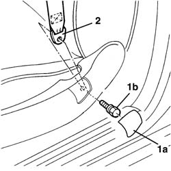
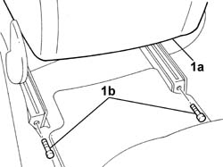
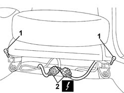

7045A10 FRONT SEAT (one) left or right - R.R.
- Path
- Procedures > 70 FITTINGS > 7045 FRONT SEATS > 7045A FRONT SEAT ASSEMBLY > 7045A10 FRONT SEAT (one) left or right - R.R.
- Kind
- repair procedure (removal / refitting; the operation number is the code)
- Applies to
- all engines; all production periods
- Interactive page
- https://sloeber94.github.io/elrnDB-lThss/en/#/80533
Applies to: all engines; all production periods
 Removing
Removing
 Refitting
Refitting- Disconnect the negative battery terminal.
1. Release the shield (1a) and undo the bolt (1b) fixing the front seat belt to the seat.
2. Remove the seat belt from the housing.

Applies to: all engines; all production periods
1. Place the front seat (1a) in the forwards end of travel position and undo the fixing bolts (1b).

Applies to: all engines; all production periods
- Move the front seat backwards into the end of travel position.
1. Undo the bolts fixing the seat to the bodyshell.
2. Disconnect the electrical connections for the seat.
 | Description | Connector |
|---|---|---|
2 | Driver's seat coupling | D070B |
| Description | Connector |
|---|---|---|
2 | Passenger seat coupling | D071B |
| Description | Connector |
|---|---|---|
2 | Driver's seat coupling | D070C |
| Description | Connector |
|---|---|---|
2 | Driver's seat coupling | D070D |
| Description | Connector |
|---|---|---|
2 | Passenger seat coupling | D071C |
| Description | Connector |
|---|---|---|
2 | Passenger seat coupling | D071C |

Applies to: all engines; all production periods
- Remove the front seat.
Applies to: all engines; all production periods
Refitting
Removing- Place the seat in position and connect the electrical connectors.
| Description | Connector |
|---|---|---|
. | Driver's seat coupling | D070B |
| Description | Connector |
|---|---|---|
. | Passenger seat coupling | D071B |
| Description | Connector |
|---|---|---|
. | Driver's seat coupling | D070C |
| Description | Connector |
|---|---|---|
. | Driver's seat coupling | D070D |
| Description | Connector |
|---|---|---|
. | Passenger seat coupling | D071C |
| Description | Connector |
|---|---|---|
. | Passenger seat coupling | D071C |
- Tighten the front fixing bolts to torque.
 | Value - daNm | Fastening | Component | Ø |
|---|---|---|---|---|
. | (front) 4 | Bolt | LEFT OR RIGHT FRONT SEAT | M10 X 1.25 |
- Move the front seat forwards into the end of travel position.
- Tighten the rear fixing bolts to torque.
| Value - daNm | Fastening | Component | Ø |
|---|---|---|---|---|
. | (rear) 4 | Bolt | LEFT OR RIGHT FRONT SEAT | M10 X 1.25 |
- Place the front seat belt in position and tighten the bolts fixing it to the front seat to torque.
| Value - daNm | Fastening | Component | Ø |
|---|---|---|---|---|
. | 4 | Bolt | FRONT SEAT BELT END | 7/16" |
- Connect the negative battery terminal.
Topics that link to this page (41)
- 3350E30 General acceleration and slewing SENSOR
- 5010B56 Duct between climate control casing and air duct to rear seats - R.R.
- 5010D27 UPPER MIXED AIR TEMPERATURE SENSOR (one) left or right - R.R. following electrical circuit check
- 5010D28 LOWER MIXED AIR TEMPERATURE SENSOR (one) left or right - R.R. following electrical circuit check
- 5040C10 Air conditioning CASING - R.R.
- 5040D86 air conditioner right air mixture flap control motor - r r
- 5040D94 Air conditioning upper left air distribution flap control motor (DEFROST) - R.R.
- 5040D96 Air conditioning upper right air distribution flap control motor (DEFROST) - R.R.
- 5505C26 ENGINE COMPARTMENT built in wiring - R.R.
- 5505C31 Under-FACIA WIRING - R.R.
- 5505C41 PASSENGER COMPARTMENT built in WIRING - R.R.
- 5580C44 SIDE BAG MODULE (one), left or right - R.R.
- 5580E70 Passive entry system electronic control unit - R.R.
- 7030B12 SUN ROOF (assembly) - R.R.
- 7030B46 DRIVE CABLE (one), left or right - R.R.
- 7030B52 Sun roof glass support JOINTS/SLIDES - R.R.
- 7040A10 Instrument facia TRIM - R.R.
- 7040A95 Left or right reinforcement crossmember (one), dashboard and bodyshell supporting crossmember - R.R.
- 7040H16 Roof LINING for versions with sun roof - R.R.
- 7040L17 Passenger compartment front floor carpet - R.R.
- 7040L18 Passenger compartment rear floor carpet - R.R.
- 7040L20 TUNNEL COVER - R.R.
- 7045A23 Front seat support/guides, left or right - R.R.
- 7045A39 Device for driver's seat backrest lumbar adjustment - R.R.
- 7045A42 Front seat GUARD (one), left or right - R.R.
- 7045A78 Front seat BACKREST FRAME. (one), left or right - R.R.
- 7045A98 Front seat rear pouch panel, left or right - R.R.
- 7045B08 Front seat head restraint pins - R.R.
- 7045D20 Front seat cushion cover, left or right - R.R.
- 7045D30 Front seat backrest cover - R.R.
- 7045G38 FRONT SEAT (LEFT/RIGHT) BACK LUMBAR ADJUSTMENT SYSTEM CABLE HARNESS - R.R. OR REPLACE
- 7045J32 Front or rear motor (one) for raising left or right front seat - R.R. after electric circuit check
- 7045J34 Front seat backrest ANGLE adjustment MOTOR, left or right - R.R. after electric circuit check
- 7045J42 Front seat head restraint adjustment motor, left or right - R.R. after electric circuit check
- 7045J50 DRIVER'S SIDE FRONT SEAT POSITION MEMORISATION SYSTEM ECU - R+R FOLLOWING ELECTRICAL WIRING CHECK
- 7045J64 Cable between motor and seat head restraint adjustment device (one), left or right - R.R.
- 7045J66 Front seat head restraint lifting device (one), left or right - R.R.
- 7045J80 FRONT SEAT MOVEMENT SYSTEM WIRING BUNDLE - R R OR REPLACE
- 7045M22 Front seat CUSHION HEATER PAD, left or right - R.R. after electric circuit check
- 7045M26 L/H OR R/H FRONT SEAT SQUAB HEAT PAD - R+R FOLLOWING ELECTRICAL WIRING CHECK
- 7045N10 ELECTRO-PNEUMATIC CONTROL UNIT (1) FOR FRONT SEAT, LEFT OR RIGHT - R.R. WITH SEAT REMOVED